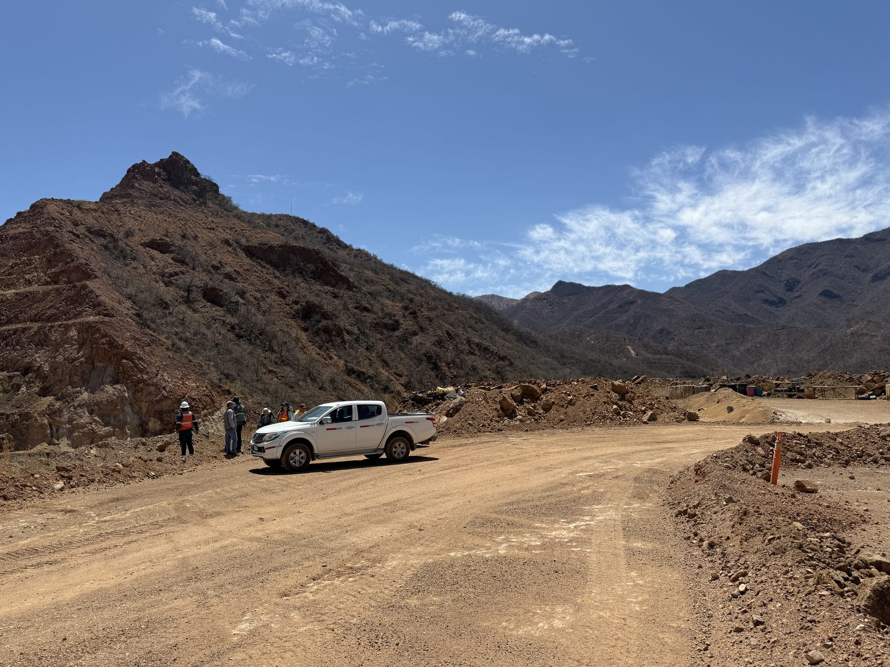
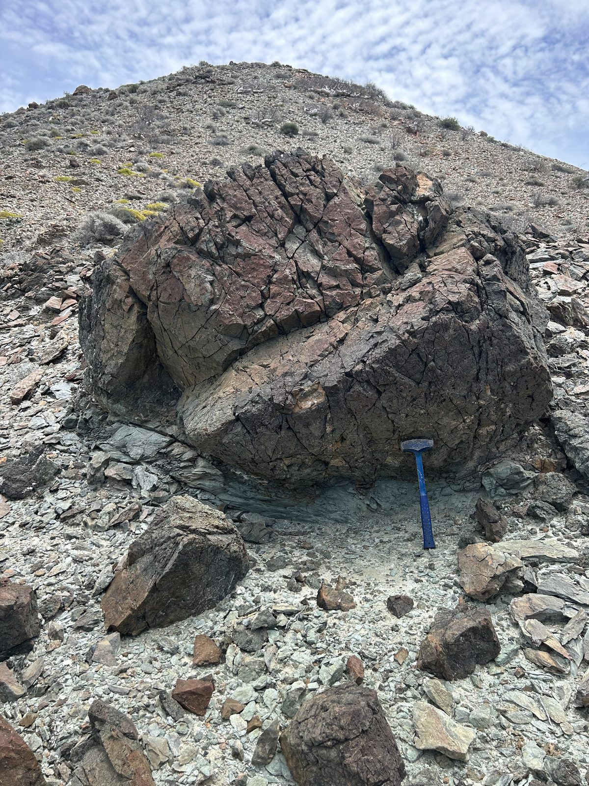
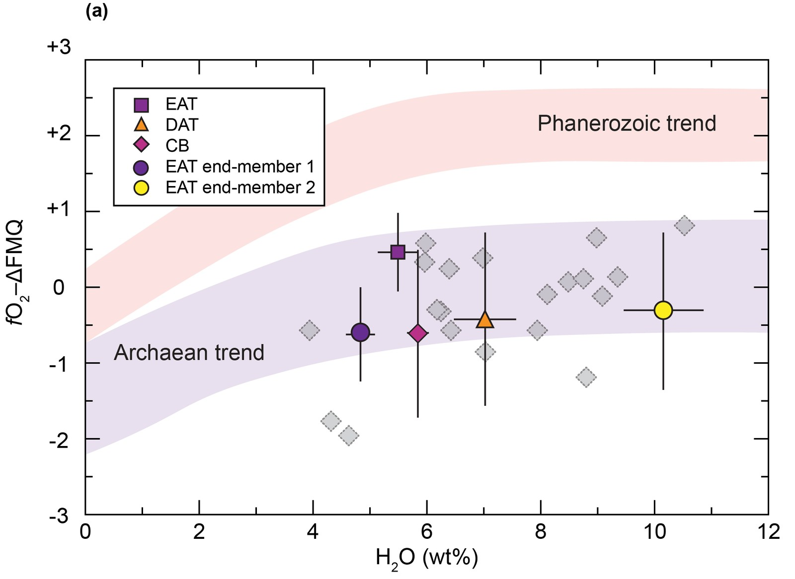
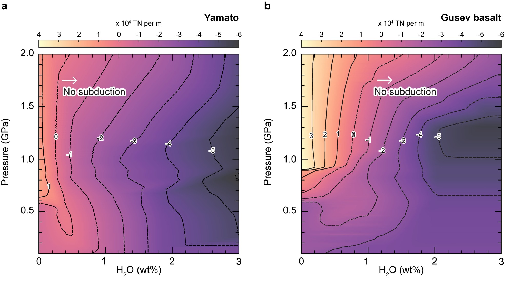
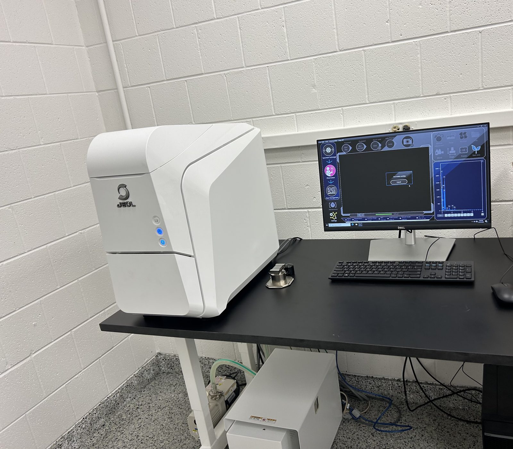

Research
We work at the intersection of petrology, geochemistry, and tectonics. Most of our projects start with a model and end with a rock: thermodynamic modeling predicts how rocks and magmas evolve, and field and laboratory data put those predictions to the test.
Porphyry Cu deposits Subduction zones Earth's first continents Mars and planetary tectonics Our lab
Porphyry Cu deposits
Porphyry deposits are the main source of the world's copper, a metal essential for electrification. They form from oxidized, water-rich magmas, and a central question is how magmas acquire those properties. Our modeling points to an oxidized mantle source and very high water contents, rather than deep garnet fractionation, and shows that widely used zircon-based fertility indicators must be interpreted with care.
In the field, our NSF-funded work in Sonora, Mexico, compares ore-bearing and barren intrusions to identify when and why fertile magmas formed. Current projects extend this to magmatic cumulates, titanite and apatite petrochronology, orogenic gold systems, and deposits in Chile and Baja California.

Subduction zones
As oceanic plates sink, their minerals break down and release water and other elements that fuel arc volcanism and can trigger earthquakes. We model these reactions and compare the results with high-pressure rocks returned to the surface in Mexico, China, and Baja California, including the youngest eclogites known in the North American Cordillera.
This work has shown, for example, that lawsonite eclogite forms only in cold, mature subduction zones, and that mineral dehydration helped trigger the 2017 Puebla–Morelos earthquake in Mexico.

Earth's first continents
The magmas that built Earth's oldest continents were relatively wet and oxidized, a signal often taken as evidence that subduction was already active. Our modeling shows that melting of very thick basaltic crust produces the same signal without subduction, pointing to crustal thickening as a key step in forming the first continents.

Mars and planetary tectonics
Mars has a thick crust and once had water, yet it never developed plate tectonics. Combining numerical and thermodynamic models, we found that even small amounts of water made the Martian crust too light to sink. Early water likely prevented subduction on Mars rather than promoting it.

Our lab
The SEM–Petrology Laboratory at UIC houses a JEOL NeoScope JCM-7000 benchtop scanning electron microscope, along with petrographic microscopes and mineral separation equipment.
